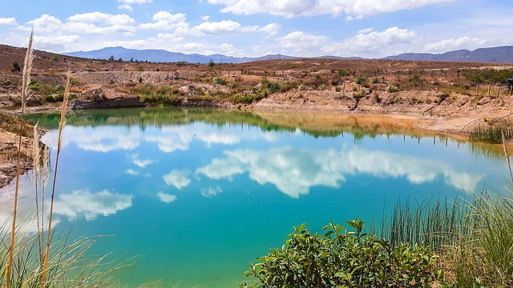
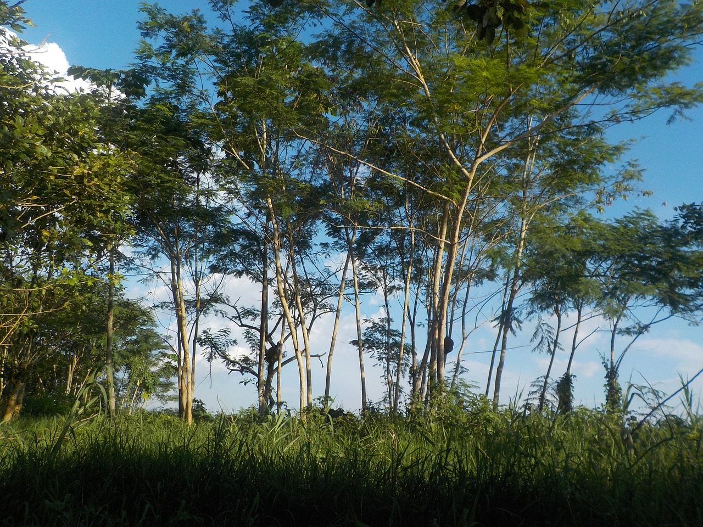

| Boyaca | Antioquia |
|  |  |
Principales lugares para conocer en Boyacá. Museos, parques, atractivos turísticos y todos los pueblos que debes visitar en Boyacá. Viaja por Boyacá y prepárate para conocer lugares y atractivos turísticos como Guatika Parque Fincaventura, Termales de Paipa, Moniquirá: La Ciudad Dulce de Colombia, Chiquinquirá, Laguna de Tota |
Antioquia la piedra Del Peñol. Museo Pablo Escobar. Parque Explora. Laguna de Guatape. Museo de Antioquía. Jardín Botánico de Medellín. Plaza Botero. Medellin Metrocable. |
| Nariño | Santander |
|
 |
Nariño Santuario de Las Lajas. 861. La Laguna de la Cocha. 545. Casa Museo Taminango. Museos especializados. Volcán Cumbal. Volcanes. Iglesia Templo de la Merced. Lugares religiosos • Iglesias y catedrales. Catedral de Ipiales. Museo del Carnaval. Centro historico de Pasto. |
Parque Nacional de Chicamocha. Cascada de Juan Curi. Camino Real. La Casa del Libro Total. Pony Parque Hotel Mesa de Los Santos. Parques de diversión y temáticos. Catedral de La Sagrada Familia. Xplorer. Parques de diversión y temáticos. Panachi. |